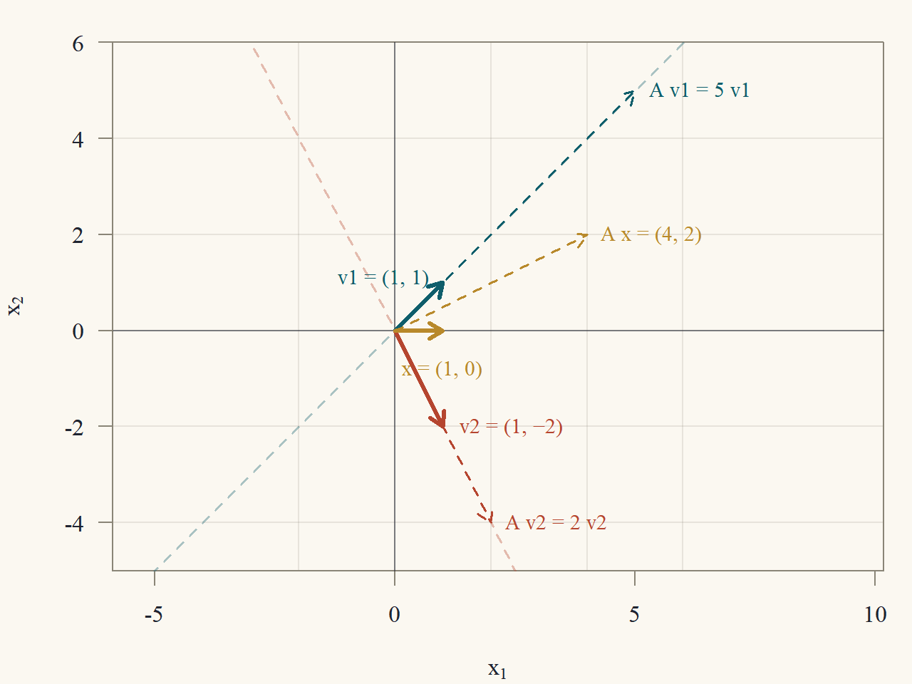
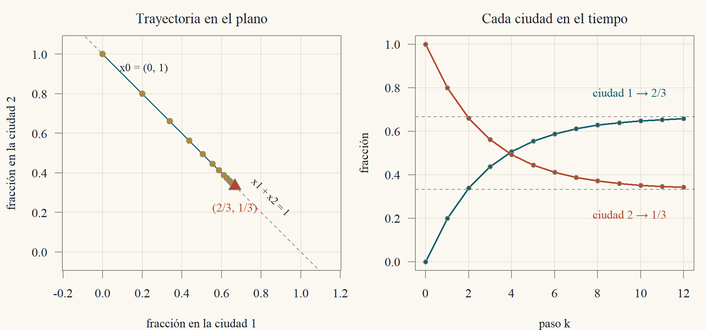
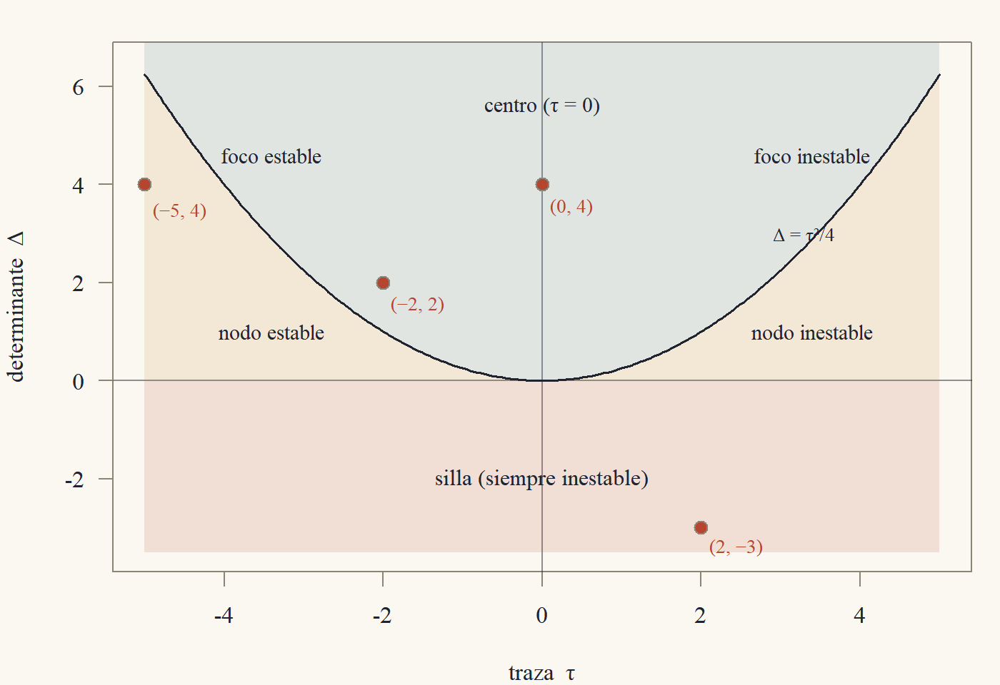
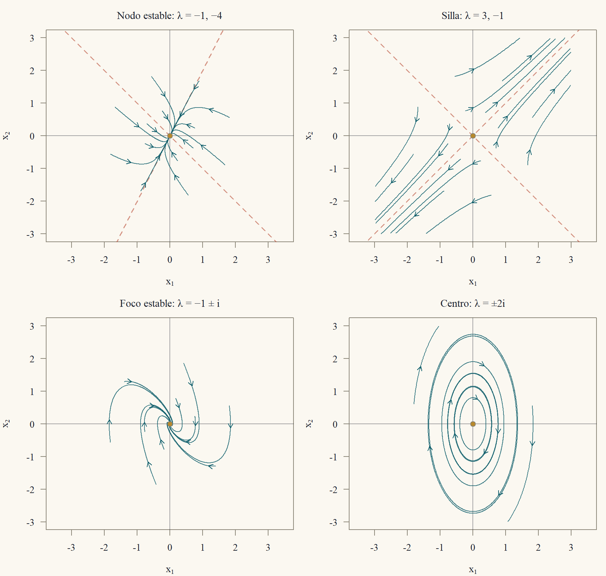
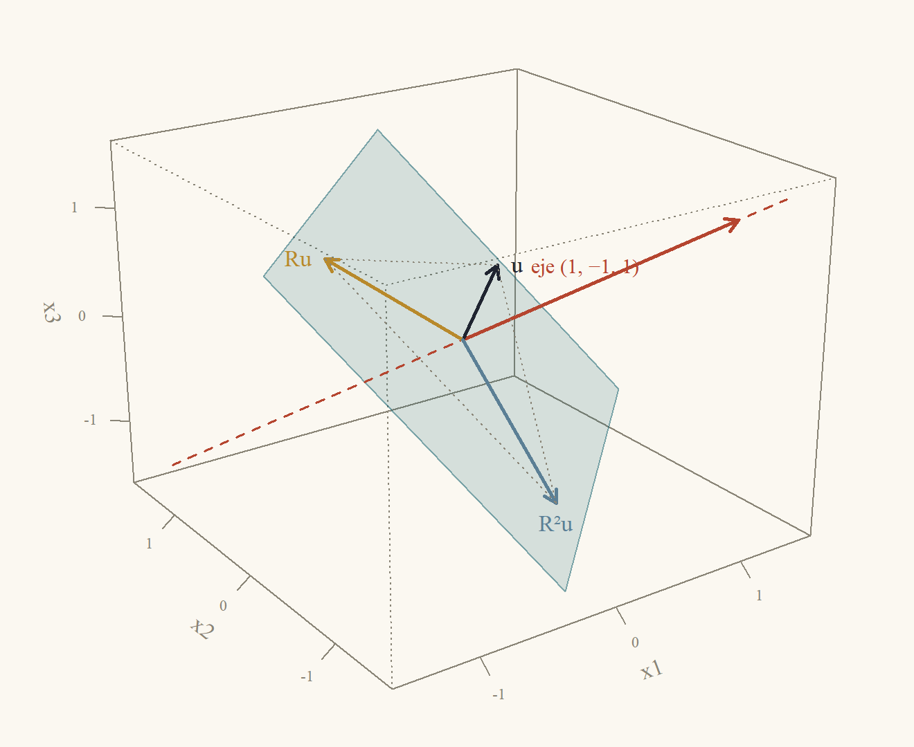
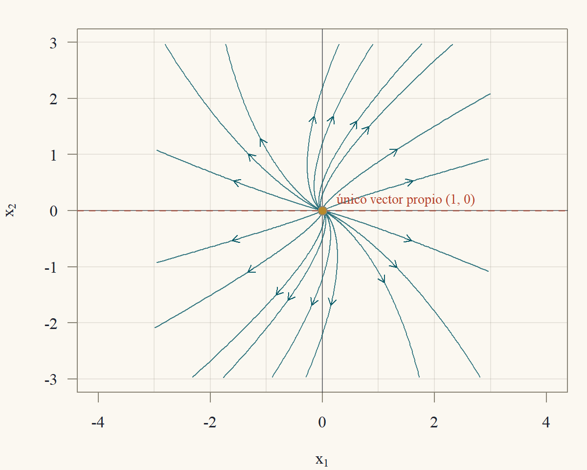

Clase 7 · Valores propios y sistemas dinámicos
Las direcciones que una matriz no tuerce
1 Un sistema que se repite
Dos ciudades se reparten una población fija. Cada año, el 10 % de los habitantes de la ciudad 1 se muda a la ciudad 2, y el 20 % de los de la ciudad 2 se muda a la 1. Si \(x_k = (a_k,b_k)'\) son las fracciones de la población en cada ciudad en el año \(k\), entonces \[ \begin{pmatrix}a_{k+1}\\b_{k+1}\end{pmatrix} = \underbrace{\begin{pmatrix}0{,}9&0{,}2\\0{,}1&0{,}8\end{pmatrix}}_{A}\begin{pmatrix}a_k\\b_k\end{pmatrix},\qquad\text{es decir}\qquad x_{k+1} = Ax_k. \] Después de \(k\) años, \(x_k = A^kx_0\). ¿Hacia dónde va la población? Calcular \(A^{10}\) multiplicando diez veces es posible, pero no dice nada sobre el largo plazo. Hay un camino mejor. Fíjate en lo que hace \(A\) con dos vectores especiales: \[ A\begin{pmatrix}2\\1\end{pmatrix} = \begin{pmatrix}1{,}8 + 0{,}2\\0{,}2 + 0{,}8\end{pmatrix} = 1\cdot\begin{pmatrix}2\\1\end{pmatrix},\qquad A\begin{pmatrix}1\\-1\end{pmatrix} = \begin{pmatrix}0{,}9 - 0{,}2\\0{,}1 - 0{,}8\end{pmatrix} = 0{,}7\cdot\begin{pmatrix}1\\-1\end{pmatrix}. \] Sobre esos dos vectores la matriz no cambia la dirección: solo estira. Y cada aplicación posterior de \(A\) vuelve a multiplicar por el mismo número, de modo que \(A^k(2,1)' = 1^k(2,1)'\) y \(A^k(1,-1)' = 0{,}7^k(1,-1)'\). Si el vector inicial se escribe como combinación de ellos, \(x_0 = c_1(2,1)' + c_2(1,-1)'\), entonces \[ x_k = c_1\cdot1^k\begin{pmatrix}2\\1\end{pmatrix} + c_2\cdot0{,}7^k\begin{pmatrix}1\\-1\end{pmatrix}, \] y el segundo término se apaga: el sistema converge a un reparto fijo, que es un múltiplo de \((2,1)'\). Eso es lo que hacen los valores y vectores propios: encuentran las direcciones en que una matriz se comporta como un número. Esta clase los construye, los usa para calcular potencias, y los aplica a cuatro problemas: sucesiones (Fibonacci), cadenas de Markov, ecuaciones diferenciales y rotaciones en el espacio.
2 Un repaso de números complejos
Una matriz real puede tener valores propios complejos (una rotación del plano no deja ninguna dirección fija: ¿cómo podría tener valores propios reales?). Por eso trabajamos con números complejos. Lo que se necesita:
- Un número complejo es \(z = a + bi\) con \(a,b\) reales e \(i^2 = -1\). Su conjugado es \(\bar z = a - bi\), y su módulo \(|z| = \sqrt{a^2 + b^2}\) cumple \(|z|^2 = z\bar z\) y \(|zw| = |z||w|\).
- La fórmula de Euler: \(e^{i\theta} = \cos\theta + i\sin\theta\). Todo complejo no nulo se escribe \(z = re^{i\theta}\) con \(r = |z|\) y \(\theta\) el ángulo. Entonces \(z^k = r^ke^{ik\theta}\): elevar a \(k\) multiplica el módulo \(k\) veces y suma el ángulo \(k\) veces. Además \(|e^{(\alpha + i\beta)t}| = e^{\alpha t}\) para \(t\) real.
- Teorema fundamental del álgebra (se usa sin demostración): todo polinomio de grado \(n\) con coeficientes complejos tiene \(n\) raíces complejas, contadas con multiplicidad, y se factoriza como \(c\prod(\lambda - \lambda_i)\). Si los coeficientes son reales, las raíces no reales vienen en pares conjugados.
Todo lo que se demuestra en esta clase para valores propios vale en \(\mathbb{C}\): los vectores pueden tener entradas complejas y las combinaciones lineales usan escalares complejos.
3 Valores propios y vectores propios
Definición 1 (Valor propio y vector propio) Sea \(A\) una matriz \(n\times n\). Un número \(\lambda\) (real o complejo) es un valor propio de \(A\) si existe un vector \(v\ne0\) con \[ Av = \lambda v. \] Ese \(v\) es un vector propio asociado a \(\lambda\). El conjunto \(E_\lambda = N(A - \lambda I)\) (los vectores propios más el cero) es el espacio propio de \(\lambda\).
Un vector propio no puede ser cero (así cualquier \(\lambda\) serviría), pero \(\lambda = 0\) sí puede ser valor propio. Si \(v\) es vector propio, también lo es \(cv\) para todo \(c\ne0\): lo que importa es la dirección.
Teorema 1 (El polinomio característico) \(\lambda\) es un valor propio de \(A\) si y solo si \(\det(\lambda I - A) = 0\). La función \(p(\lambda) = \det(\lambda I - A)\) es un polinomio mónico de grado \(n\) en \(\lambda\), el polinomio característico de \(A\), así que \(A\) tiene \(n\) valores propios en \(\mathbb{C}\) (contados con multiplicidad).
Demostración. \(Av = \lambda v\) con \(v\ne0\) equivale a \((\lambda I - A)v = 0\) con \(v\ne0\), es decir, a que \(N(\lambda I - A)\ne\{0\}\). Para una matriz cuadrada, tener un espacio nulo no trivial equivale a ser singular (Clase 3) y esto a tener determinante cero (Clase 4).
Por la fórmula de Leibniz (Clase 4, sección ★), \(\det(\lambda I - A)\) es una suma de productos de \(n\) entradas de \(\lambda I - A\), una por fila y columna. Cada entrada es un polinomio de grado a lo sumo \(1\) en \(\lambda\) (es \(\lambda - a_{ii}\) en la diagonal y \(-a_{ij}\) fuera), así que \(p\) es un polinomio de grado a lo sumo \(n\). El único término de grado \(n\) viene del producto de la diagonal, \(\prod(\lambda - a_{ii})\), que tiene coeficiente principal \(1\). Por el teorema fundamental del álgebra, \(p(\lambda) = \prod_{i=1}^n(\lambda - \lambda_i)\).
Para \(2\times2\), con \(\tau = \operatorname{tr}A = a_{11} + a_{22}\) la traza y \(\Delta = \det A\): \[ p(\lambda) = (\lambda - a_{11})(\lambda - a_{22}) - a_{12}a_{21} = \lambda^2 - \tau\lambda + \Delta. \] Para \(3\times3\) aparece una fórmula análoga.
Proposición 1 (Polinomio característico de una matriz \(3\times3\)) \[ p(\lambda) = \lambda^3 - (\operatorname{tr}A)\,\lambda^2 + (M_{11} + M_{22} + M_{33})\,\lambda - \det A, \] donde \(M_{ii}\) es el determinante de la matriz \(2\times2\) que queda al borrar la fila \(i\) y la columna \(i\) de \(A\).
Demostración. Sea \(B = \lambda I - A\), con \(b_{ii} = \lambda - a_{ii}\) y \(b_{ij} = -a_{ij}\) si \(i\ne j\). La regla de Sarrus (Clase 4) da \[ \begin{aligned} \det B &= b_{11}b_{22}b_{33} + b_{12}b_{23}b_{31} + b_{13}b_{21}b_{32}\\ &\quad - b_{13}b_{22}b_{31} - b_{12}b_{21}b_{33} - b_{11}b_{23}b_{32}. \end{aligned} \] Sustituyendo, y observando que en los términos con tres entradas no diagonales salen tres signos menos, que se multiplican: \[ \begin{aligned} \det B &= \prod_i(\lambda - a_{ii}) - a_{12}a_{23}a_{31} - a_{13}a_{21}a_{32}\\ &\quad - a_{13}a_{31}(\lambda - a_{22}) - a_{12}a_{21}(\lambda - a_{33}) - a_{23}a_{32}(\lambda - a_{11}). \end{aligned} \] El producto \(\prod(\lambda - a_{ii})\) es \(\lambda^3 - (a_{11} + a_{22} + a_{33})\lambda^2 + (a_{11}a_{22} + a_{11}a_{33} + a_{22}a_{33})\lambda - a_{11}a_{22}a_{33}\). Reuniendo el coeficiente de \(\lambda\): \[ \begin{aligned} &a_{11}a_{22} + a_{11}a_{33} + a_{22}a_{33} - a_{13}a_{31} - a_{12}a_{21} - a_{23}a_{32}\\ &\qquad= (a_{11}a_{22} - a_{12}a_{21}) + (a_{11}a_{33} - a_{13}a_{31}) + (a_{22}a_{33} - a_{23}a_{32}), \end{aligned} \] la suma de los tres menores \(M_{33}\), \(M_{22}\) y \(M_{11}\). El término constante es \[ \begin{aligned} &-a_{11}a_{22}a_{33} - a_{12}a_{23}a_{31} - a_{13}a_{21}a_{32}\\ &\qquad + a_{13}a_{31}a_{22} + a_{12}a_{21}a_{33} + a_{23}a_{32}a_{11} = -\det A, \end{aligned} \] por la regla de Sarrus aplicada a \(A\).
Teorema 2 (Suma y producto de los valores propios) Si \(\lambda_1,\dots,\lambda_n\) son los valores propios de \(A\) (con multiplicidad), entonces \[ \lambda_1 + \dots + \lambda_n = \operatorname{tr}A,\qquad\lambda_1\cdots\lambda_n = \det A. \]
Escribo \(p(\lambda)\) de dos maneras: como \(\prod(\lambda - \lambda_i)\), y como el determinante \(\det(\lambda I - A)\) expandido. Comparo el coeficiente de \(\lambda^{n-1}\) y el término constante. En el determinante, solo la permutación identidad tiene suficientes factores \(\lambda\) para aportar a \(\lambda^{n-1}\).
Demostración. De la factorización, \(p(\lambda) = \lambda^n - (\sum_i\lambda_i)\lambda^{n-1} + \dots + (-1)^n\prod_i\lambda_i\).
Por Leibniz, \(p(\lambda) = \sum_\sigma\operatorname{sgn}(\sigma)\prod_i(\lambda I - A)_{i,\sigma(i)}\) (suma sobre las permutaciones \(\sigma\) de \(\{1,\dots,n\}\)). Una permutación distinta de la identidad mueve al menos dos índices, así que tiene a lo sumo \(n - 2\) factores diagonales \((\lambda - a_{ii})\); los demás factores son constantes \(-a_{ij}\). Entonces su término tiene grado \(\le n - 2\) en \(\lambda\). Los términos de grado \(n\) y \(n - 1\) vienen solo de la identidad: \[ \prod_i(\lambda - a_{ii}) = \lambda^n - (\textstyle\sum_ia_{ii})\lambda^{n-1} + \dots \] Comparando los coeficientes de \(\lambda^{n-1}\): \(\sum\lambda_i = \sum a_{ii} = \operatorname{tr}A\).
Para el término constante, \(p(0) = \det(-A) = (-1)^n\det A\) (cada una de las \(n\) filas se multiplica por \(-1\), Clase 4), y de la factorización \(p(0) = \prod(-\lambda_i) = (-1)^n\prod\lambda_i\). Por lo tanto, \(\det A = \prod\lambda_i\).
Para una matriz \(2\times2\), esto dice que los valores propios son las raíces de \(\lambda^2 - \tau\lambda + \Delta\): suman \(\tau\) y multiplican \(\Delta\). En particular, \(A\) es invertible si y solo si \(0\) no es un valor propio (porque \(\det A = \prod\lambda_i\)).
Proposición 2 (Propiedades elementales) Sea \(Av = \lambda v\) con \(v\ne0\).
- \(A^kv = \lambda^kv\) para todo \(k\ge0\), y \((A + cI)v = (\lambda + c)v\).
- Si \(A\) es invertible, \(\lambda\ne0\) y \(A^{-1}v = \lambda^{-1}v\).
- \(A\) y \(A'\) tienen el mismo polinomio característico, luego los mismos valores propios.
- Si \(A\) es triangular, sus valores propios son las entradas de la diagonal.
Demostración.
- Por inducción: \(A^{k+1}v = A(\lambda^kv) = \lambda^kAv = \lambda^{k+1}v\). Y \((A + cI)v = \lambda v + cv\). (2) Si \(A\) es invertible y \(Av = \lambda v\), entonces \(\lambda\ne0\) (si fuera \(0\), \(Av = 0\) con \(v\ne0\) contradice la invertibilidad), y multiplicando por \(A^{-1}\) queda \(v = \lambda A^{-1}v\), es decir, \(A^{-1}v = \lambda^{-1}v\). (3) \(\det(\lambda I - A') = \det\big((\lambda I - A)'\big) = \det(\lambda I - A)\) (Clase 4). (4) Si \(A\) es triangular, \(\lambda I - A\) también, y su determinante es el producto de la diagonal (Clase 4): \(p(\lambda) = \prod(\lambda - a_{ii})\).
Los valores propios de \(A^k\) son \(\lambda^k\): esa es la razón por la que sirven para calcular potencias.
Teorema 3 (Vectores propios de valores propios distintos son independientes) Si \(v_1,\dots,v_k\) son vectores propios de \(A\) asociados a valores propios distintos \(\lambda_1,\dots,\lambda_k\), entonces \(v_1,\dots,v_k\) son linealmente independientes. En particular, si \(A\) tiene \(n\) valores propios distintos, tiene \(n\) vectores propios independientes.
Si fueran dependientes, tomo una dependencia con el menor número de vectores. Multiplico la relación por \(A\) y, por otro lado, por \(\lambda_r\); restando elimino un vector y obtengo una dependencia más corta, que contradice la minimalidad.
Demostración. Supongamos que son dependientes. Entre todas las relaciones de dependencia de subconjuntos, elegimos una con el menor número \(r\) de vectores; renumerando, \(c_1v_1 + \dots + c_rv_r = 0\) con todos los \(c_i\ne0\) (si algún coeficiente fuera cero, habría una dependencia más corta). Como \(v_1\ne0\), necesariamente \(r\ge2\). Multiplicando por \(A\): \[ c_1\lambda_1v_1 + \dots + c_r\lambda_rv_r = 0. \] Multiplicando la relación original por \(\lambda_r\) y restando: \[ c_1(\lambda_1 - \lambda_r)v_1 + \dots + c_{r-1}(\lambda_{r-1} - \lambda_r)v_{r-1} = 0. \] Los coeficientes son no nulos (los \(c_i\ne0\) y los \(\lambda_i\) son distintos), así que es una dependencia con \(r - 1\) vectores. Contradice la minimalidad de \(r\).
Ejemplo 1 (Valores propios de una matriz \(2\times2\)) \(A = \begin{pmatrix}4&1\\2&3\end{pmatrix}\) tiene \(\tau = 7\) y \(\Delta = 12 - 2 = 10\), así que \(p(\lambda) = \lambda^2 - 7\lambda + 10 = (\lambda - 5)(\lambda - 2)\) y los valores propios son \(5\) y \(2\) (suman \(7\) y multiplican \(10\) ✓). Los vectores propios son el espacio nulo de \(A - \lambda I\):
- \(\lambda = 5\): \(A - 5I = \begin{pmatrix}-1&1\\2&-2\end{pmatrix}\), la ecuación \(-x_1 + x_2 = 0\) da \(v_1 = (1,1)'\). Verificación: \(A(1,1)' = (5,5)' = 5v_1\) ✓.
- \(\lambda = 2\): \(A - 2I = \begin{pmatrix}2&1\\2&1\end{pmatrix}\), la ecuación \(2x_1 + x_2 = 0\) da \(v_2 = (1,-2)'\). Verificación: \(A(1,-2)' = (2,-4)' = 2v_2\) ✓.
La Figura 1 muestra la diferencia con un vector cualquiera: \(x = (1,0)'\) se transforma en \(Ax = (4,2)'\), que cambió de dirección, mientras que \(v_1\) y \(v_2\) solo cambian de largo.

Ejemplo 2 (Valores propios de una matriz \(3\times3\)) \[ A = \begin{pmatrix}1&-2&2\\1&3&-1\\1&0&2\end{pmatrix}. \] La traza es \(1 + 3 + 2 = 6\). Los menores \(2\times2\) de la diagonal son \(M_{11} = 3\cdot2 - (-1)\cdot0 = 6\), \(M_{22} = 1\cdot2 - 2\cdot1 = 0\) y \(M_{33} = 1\cdot3 - (-2)\cdot1 = 5\), que suman \(11\). El determinante, por Sarrus, es \((6 + 2 + 0) - (6 + 0 - 4) = 8 - 2 = 6\). Entonces (Proposición 1) \[ p(\lambda) = \lambda^3 - 6\lambda^2 + 11\lambda - 6 = (\lambda - 1)(\lambda - 2)(\lambda - 3), \] como se comprueba probando \(\lambda = 1\) (\(1 - 6 + 11 - 6 = 0\)) y dividiendo: \(\lambda^3 - 6\lambda^2 + 11\lambda - 6 = (\lambda - 1)(\lambda^2 - 5\lambda + 6)\). Los valores propios son \(1, 2, 3\) (suman \(6 = \operatorname{tr}A\) y multiplican \(6 = \det A\) ✓). Vectores propios:
- \(\lambda = 1\): \(A - I = \begin{pmatrix}0&-2&2\\1&2&-1\\1&0&1\end{pmatrix}\). La primera fila da \(x_2 = x_3\) y la tercera, \(x_1 = -x_3\): \(v_1 = (1,-1,-1)'\). Verificación: \(A v_1 = (1 + 2 - 2,\ 1 - 3 + 1,\ 1 - 2) = (1,-1,-1)\) ✓.
- \(\lambda = 2\): \(A - 2I = \begin{pmatrix}-1&-2&2\\1&1&-1\\1&0&0\end{pmatrix}\). La tercera fila da \(x_1 = 0\), y la segunda \(x_2 = x_3\): \(v_2 = (0,1,1)'\). Verificación: \(Av_2 = (-2 + 2,\ 3 - 1,\ 2) = (0,2,2) = 2v_2\) ✓.
- \(\lambda = 3\): \(A - 3I = \begin{pmatrix}-2&-2&2\\1&0&-1\\1&0&-1\end{pmatrix}\). La segunda fila da \(x_1 = x_3\) y la primera, \(-2x_1 - 2x_2 + 2x_1 = 0\), o sea \(x_2 = 0\): \(v_3 = (1,0,1)'\). Verificación: \(Av_3 = (1 + 2,\ 1 - 1,\ 1 + 2) = (3,0,3) = 3v_3\) ✓.
Ejemplo 3 (Una rotación no tiene direcciones fijas) La rotación del plano \(R(\theta)\) (Clase 5) tiene \(\tau = 2\cos\theta\) y \(\Delta = \cos^2\theta + \sin^2\theta = 1\), así que \(p(\lambda) = \lambda^2 - 2\cos\theta\,\lambda + 1\), con raíces \[ \lambda = \cos\theta\pm\sqrt{\cos^2\theta - 1} = \cos\theta\pm i\sin\theta = e^{\pm i\theta}. \] Son reales solo si \(\sin\theta = 0\) (\(\theta = 0\) o \(\pi\)): para cualquier otro ángulo, la rotación no deja ninguna recta fija, y sus valores propios son complejos de módulo \(1\). Por ejemplo, con \(\theta = 90°\), \(R = \begin{pmatrix}0&-1\\1&0\end{pmatrix}\) y \(p(\lambda) = \lambda^2 + 1\), con raíces \(\pm i\); un vector propio de \(\lambda = i\) es \(v = (1,-i)'\): \(Rv = (i,\ 1) = i\,(1,-i)\) ✓.
4 Diagonalización
Teorema 4 (Diagonalización) Una matriz \(A\) (\(n\times n\)) es diagonalizable si existen \(P\) invertible y \(D\) diagonal con \[ A = PDP^{-1}. \] Esto ocurre si y solo si \(A\) tiene \(n\) vectores propios linealmente independientes. En ese caso, las columnas de \(P\) son esos vectores propios \(v_1,\dots,v_n\) y \(D = \operatorname{diag}(\lambda_1,\dots,\lambda_n)\) tiene los valores propios correspondientes.
Demostración. \(A = PDP^{-1}\) equivale a \(AP = PD\) (con \(P\) invertible). Por columnas, la columna \(j\) de \(AP\) es \(Ap_j\) y la de \(PD\) es \(d_jp_j\) (el producto de \(P\) por una matriz diagonal escala sus columnas, Clase 2). Entonces \(AP = PD\) dice exactamente \(Ap_j = d_jp_j\) para cada \(j\): las columnas de \(P\) son vectores propios con valores propios \(d_j\). Y \(P\) es invertible si y solo si sus columnas son independientes (Clase 3).
Si existen \(n\) vectores propios independientes \(v_1,\dots,v_n\), formamos \(P = (v_1\ \cdots\ v_n)\) (invertible) y \(D\) con los \(\lambda_j\); entonces \(AP = PD\) y \(A = PDP^{-1}\). Recíprocamente, si \(A = PDP^{-1}\), las columnas de \(P\) son \(n\) vectores propios independientes.
Por el Teorema 3, si los \(n\) valores propios son distintos, \(A\) es diagonalizable. (Lo contrario es falso: la identidad es diagonal y tiene un solo valor propio.)
Teorema 5 (Potencias de una matriz diagonalizable) Si \(A = PDP^{-1}\), entonces \(A^k = PD^kP^{-1}\) para todo \(k\ge0\), con \(D^k = \operatorname{diag}(\lambda_1^k,\dots,\lambda_n^k)\).
Demostración. Por inducción. Para \(k = 0\) es \(PP^{-1} = I\). Si \(A^k = PD^kP^{-1}\), entonces \(A^{k+1} = A^kA = PD^kP^{-1}\,PDP^{-1} = PD^kIDP^{-1} = PD^{k+1}P^{-1}\). Y la potencia de una matriz diagonal eleva cada entrada de la diagonal.
El costo de calcular \(A^k\) deja de crecer con \(k\): una vez que se tiene \(P\) y \(D\), cada potencia son dos productos de matrices.
Ejemplo 4 (Potencias de matrices \(2\times2\) y \(3\times3\)) En el plano. Para \(A = \begin{pmatrix}4&1\\2&3\end{pmatrix}\) (Ejemplo 1), \(P = \begin{pmatrix}1&1\\1&-2\end{pmatrix}\) y \(D = \operatorname{diag}(5,2)\). Como \(\det P = -2 - 1 = -3\), \(P^{-1} = \tfrac1{-3}\begin{pmatrix}-2&-1\\-1&1\end{pmatrix} = \tfrac13\begin{pmatrix}2&1\\1&-1\end{pmatrix}\), y \[ A^k = \frac13\begin{pmatrix}1&1\\1&-2\end{pmatrix}\begin{pmatrix}5^k&0\\0&2^k\end{pmatrix}\begin{pmatrix}2&1\\1&-1\end{pmatrix} = \frac13\begin{pmatrix}2\cdot5^k + 2^k&5^k - 2^k\\2\cdot5^k - 2\cdot2^k&5^k + 2\cdot2^k\end{pmatrix}. \] Para \(k = 1\) da \(\tfrac13\begin{pmatrix}12&3\\6&9\end{pmatrix} = A\) ✓; para \(k = 3\), \(\tfrac13\begin{pmatrix}258&117\\234&141\end{pmatrix} = \begin{pmatrix}86&39\\78&47\end{pmatrix}\), que coincide con \(A\cdot A\cdot A\). Con \(k = 10\): \(A^{10}_{11} = (2\cdot5^{10} + 2^{10})/3 = 6\,510\,758\).
En el espacio. Para la matriz del Ejemplo 2, \(P = (v_1\ v_2\ v_3) = \begin{pmatrix}1&0&1\\-1&1&0\\-1&1&1\end{pmatrix}\) tiene \(\det P = 1\cdot(1 - 0) - 0 + 1\cdot(-1 + 1) = 1\) y \(P^{-1} = \begin{pmatrix}1&1&-1\\1&2&-1\\0&-1&1\end{pmatrix}\) (se verifica multiplicando). Entonces \(A^k = P\operatorname{diag}(1,2^k,3^k)P^{-1}\). Para \(k = 2\): \[ A^2 = P\operatorname{diag}(1,4,9)P^{-1} = \begin{pmatrix}1&-8&8\\3&7&-3\\3&-2&6\end{pmatrix}, \] que es el producto \(A\cdot A\) (por ejemplo, la entrada \((1,2)\) de \(A^2\) es la fila \((1,-2,2)\) por la columna \((-2,3,0)'\): \(-2 - 6 + 0 = -8\) ✓).
5 Sistemas dinámicos discretos
Teorema 6 (Solución de \(x_{k+1} = Ax_k\)) Si \(A = PDP^{-1}\) con vectores propios \(v_1,\dots,v_n\) y valores propios \(\lambda_1,\dots,\lambda_n\), la solución de \(x_{k+1} = Ax_k\) con \(x_0\) dado es \[ x_k = c_1\lambda_1^kv_1 + \dots + c_n\lambda_n^kv_n,\qquad c = P^{-1}x_0. \] Además:
- Si \(|\lambda_i|<1\) para todo \(i\), entonces \(x_k\to0\) para todo \(x_0\).
- Si algún \(|\lambda_j|>1\), existe un \(x_0\) real para el cual \(\|x_k\|\) no está acotada.
- Si \(|\lambda_1|>|\lambda_i|\) para \(i\ge2\) y \(c_1\ne0\), entonces \(x_k/\lambda_1^k\to c_1v_1\): a largo plazo, el sistema se alinea con \(v_1\) y crece (o decrece) como \(\lambda_1^k\).
Demostración. \(x_k = A^kx_0 = PD^kP^{-1}x_0 = PD^kc = \sum c_i\lambda_i^kv_i\), porque \(Pw\) es la combinación de las columnas de \(P\) con los coeficientes de \(w\) (Clase 2).
\(|\lambda_i^k| = |\lambda_i|^k\to0\) para cada \(i\), luego cada término tiende a \(0\).
\(x_k/\lambda_1^k = c_1v_1 + \sum_{i\ge2}c_i(\lambda_i/\lambda_1)^kv_i\) y \(|\lambda_i/\lambda_1|<1\), así que los términos de la suma tienden a \(0\).
Si \(\lambda_j\) es real, \(v_j\) puede elegirse real (es una solución no nula del sistema real \((A - \lambda_jI)v = 0\)) y con \(x_0 = v_j\) queda \(\|x_k\| = |\lambda_j|^k\|v_j\|\to\infty\). Si \(\lambda_j\) no es real, escribimos \(v_j = u + iw\) con \(u,w\) reales y consideramos las soluciones reales con \(x_0 = u\) y \(x_0 = w\): sus normas cumplen \(\|A^ku\| + \|A^kw\|\ge\|A^ku + iA^kw\| = \|A^kv_j\| = |\lambda_j|^k\|v_j\|\to\infty\), así que al menos una de las dos no está acotada.
El número que decide todo es \(\rho(A) = \max|\lambda_i|\), el radio espectral: si es menor que \(1\), el sistema se apaga; si es mayor que \(1\), estalla. La Clase 10 demuestra esto para toda matriz, diagonalizable o no.
Ejemplo 5 (Fibonacci) La sucesión \(F_0 = 0\), \(F_1 = 1\), \(F_{k+2} = F_{k+1} + F_k\) se vuelve un sistema de primer orden con \(x_k = (F_{k+1},F_k)'\): \[ \begin{pmatrix}F_{k+2}\\F_{k+1}\end{pmatrix} = \begin{pmatrix}1&1\\1&0\end{pmatrix}\begin{pmatrix}F_{k+1}\\F_k\end{pmatrix},\qquad x_0 = \begin{pmatrix}1\\0\end{pmatrix}. \] Aquí \(\tau = 1\) y \(\Delta = -1\), así que \(p(\lambda) = \lambda^2 - \lambda - 1\) y los valores propios son \[ \varphi = \frac{1 + \sqrt5}2\approx1{,}618,\qquad\psi = \frac{1 - \sqrt5}2\approx-0{,}618, \] con \(\varphi + \psi = 1\) y \(\varphi\psi = -1\). Un vector propio de \(\lambda\) es \((\lambda,1)'\): \(A(\lambda,1)' = (\lambda + 1,\ \lambda)' = (\lambda^2,\ \lambda)' = \lambda\,(\lambda,1)'\), porque \(\lambda^2 = \lambda + 1\). El vector inicial se descompone como \(x_0 = (1,0)' = \tfrac1{\sqrt5}\big[(\varphi,1)' - (\psi,1)'\big]\) (la primera componente es \((\varphi - \psi)/\sqrt5 = 1\) y la segunda, \(0\)). Por el Teorema 6, \[ x_k = \frac1{\sqrt5}\Big[\varphi^k\begin{pmatrix}\varphi\\1\end{pmatrix} - \psi^k\begin{pmatrix}\psi\\1\end{pmatrix}\Big], \] y la segunda componente es la fórmula de Binet: \[ F_k = \frac{\varphi^k - \psi^k}{\sqrt5}. \] Como \(|\psi|<1\), el segundo término se apaga: \(F_k\) es el entero más cercano a \(\varphi^k/\sqrt5\). Por ejemplo, \(\varphi^{30}/\sqrt5 = 832\,040{,}0000002\) y \(|\psi|^{30}/\sqrt5\approx2{,}4\times10^{-7}<\tfrac12\), de modo que \(F_{30} = 832\,040\). Y \(F_{k+1}/F_k\to\varphi\), el valor propio dominante (parte 3 del teorema): \(F_{10}/F_9 = 55/34 = 1{,}6176\), \(F_{20}/F_{19} = 6765/4181 = 1{,}61803\).
Ejemplo 6 (Valores propios complejos: una espiral) \(A = \begin{pmatrix}1&-1\\1&1\end{pmatrix}\) tiene \(\tau = 2\), \(\Delta = 2\) y \(p(\lambda) = \lambda^2 - 2\lambda + 2\), con raíces \(\lambda = 1\pm i = \sqrt2\,e^{\pm i\pi/4}\). Por el repaso de complejos, \(\lambda^k = (\sqrt2)^ke^{ik\pi/4}\): cada paso gira \(45°\) y multiplica la longitud por \(\sqrt2\) (la matriz es \(\sqrt2\) por la rotación \(R(45°)\)). Como \(|\lambda|>1\), el sistema se aleja del origen en espiral. En efecto, \(A^2 = \begin{pmatrix}0&-2\\2&0\end{pmatrix}\) (giro de \(90°\) y longitud \(\times2\)), \(A^4 = -4I\) (giro de \(180°\) y longitud \(\times4\)) y \(A^8 = 16I\) (vuelta completa, longitud \(\times16 = (\sqrt2)^8\)). ✓
6 Cadenas de Markov
Un sistema como el de las dos ciudades, donde cada columna de \(A\) reparte el 100 % de un estado entre los estados siguientes, se llama cadena de Markov.
Definición 2 (Matriz estocástica) Una matriz \(A\) (\(n\times n\)) es estocástica (por columnas) si \(a_{ij}\ge0\) y cada columna suma \(1\): \(\sum_ia_{ij} = 1\). Un vector de probabilidades \(x\) tiene \(x_i\ge0\) y \(\sum x_i = 1\).
Si \(x_k\) es un vector de probabilidades (la fracción de la población en cada estado), \(x_{k+1} = Ax_k\) también lo es. En efecto, las entradas son no negativas, y con \(\mathbf 1 = (1,\dots,1)'\), \(\mathbf 1'A = \mathbf 1'\) (la fila de unos por \(A\) suma las columnas), luego \[ \mathbf 1'x_{k+1} = \mathbf 1'Ax_k = \mathbf 1'x_k = 1. \] La población total se conserva.
Teorema 7 (Valores propios de una matriz estocástica) Sea \(A\) estocástica. Entonces \(1\) es un valor propio de \(A\), y todo valor propio \(\lambda\) (real o complejo) cumple \(|\lambda|\le1\).
Que \(1\) es valor propio se lee de \(\mathbf 1'A = \mathbf 1'\): es un vector propio de \(A'\), y \(A'\) tiene los mismos valores propios que \(A\). Para la cota, sumo los valores absolutos de \(Av = \lambda v\) y uso que las columnas suman \(1\).
Demostración. De \(\mathbf 1'A = \mathbf 1'\), trasponiendo, \(A'\mathbf 1 = \mathbf 1\). Entonces \(1\) es valor propio de \(A'\) y, por la Proposición 2, de \(A\).
Sea \(Av = \lambda v\) con \(v\ne0\) (posiblemente complejo). Tomando valor absoluto en la componente \(i\) y usando \(a_{ij}\ge0\): \[ |\lambda||v_i| = \Big|\sum_ja_{ij}v_j\Big|\le\sum_ja_{ij}|v_j|. \] Sumando sobre \(i\) e intercambiando las sumas, \[ |\lambda|\sum_i|v_i|\le\sum_j|v_j|\Big(\sum_ia_{ij}\Big) = \sum_j|v_j|. \] Como \(\sum|v_i|>0\), dividimos y queda \(|\lambda|\le1\).
Teorema 8 (Convergencia a la distribución de equilibrio) Sea \(A\) estocástica y diagonalizable, con \(1\) como valor propio simple y todos los demás con \(|\lambda_i|<1\). Entonces el vector propio de \(\lambda_1 = 1\) puede normalizarse con \(\mathbf 1'v_1 = 1\) (la distribución de equilibrio), y para todo \(x_0\) vector de probabilidades, \[ x_k\longrightarrow v_1. \]
Demostración. Sea \(w\) un vector propio de \(\lambda_1 = 1\) y \(x_0\) un vector de probabilidades. Por el Teorema 6, \(x_k = c_1w + \sum_{i\ge2}c_i\lambda_i^kv_i\to c_1w\). Aplicando \(\mathbf 1'\) y usando que la suma se conserva, \(1 = \mathbf 1'x_k\to c_1\,\mathbf 1'w\). Entonces \(c_1\,\mathbf 1'w = 1\), y en particular \(\mathbf 1'w\ne0\): se puede normalizar \(v_1 = w/(\mathbf 1'w)\), con \(\mathbf 1'v_1 = 1\). Y el límite es \(c_1w = c_1(\mathbf 1'w)\,v_1 = v_1\).
(Las hipótesis del teorema se cumplen automáticamente si \(A\) tiene todas sus entradas positivas, el teorema de Perron–Frobenius de la Clase 12.)
Ejemplo 7 (Las dos ciudades) \(A = \begin{pmatrix}0{,}9&0{,}2\\0{,}1&0{,}8\end{pmatrix}\) es estocástica: \(\tau = 1{,}7\) y \(\Delta = 0{,}72 - 0{,}02 = 0{,}7\), así que \(p(\lambda) = \lambda^2 - 1{,}7\lambda + 0{,}7 = (\lambda - 1)(\lambda - 0{,}7)\), con valores propios \(1\) y \(0{,}7\) y vectores propios \((2,1)'\) y \((1,-1)'\) (los de la introducción). El equilibrio es \(v_1 = \tfrac13(2,1)'\) (para que sume \(1\)): dos tercios de la población en la ciudad 1 y un tercio en la 2, sin importar el reparto inicial. Si toda la población parte en la ciudad 2, \(x_0 = (0,1)' = c_1(2,1)' + c_2(1,-1)'\) da \(2c_1 + c_2 = 0\) y \(c_1 - c_2 = 1\), así que \(c_1 = \tfrac13\) y \(c_2 = -\tfrac23\): \[ x_k = \frac13\begin{pmatrix}2\\1\end{pmatrix} - \frac23\,0{,}7^k\begin{pmatrix}1\\-1\end{pmatrix}. \] Para \(k = 1\): \(\tfrac13(2,1) - \tfrac23\cdot0{,}7(1,-1) = (0{,}2;\ 0{,}8)\), que es \(Ax_0\) ✓. El error respecto del equilibrio se reduce un 30 % por año (Figura 2): después de \(k\) años, la diferencia es \(\tfrac23\,0{,}7^k\).

Ejemplo 8 (Una partícula en tres posiciones) Una partícula salta cada segundo entre tres posiciones en fila: desde la \(1\) se queda con probabilidad \(\tfrac12\) o pasa a la \(2\) con \(\tfrac12\); desde la \(2\) pasa a la \(1\) con \(\tfrac14\), se queda con \(\tfrac12\) o pasa a la \(3\) con \(\tfrac14\); desde la \(3\) se queda con \(\tfrac12\) o pasa a la \(2\) con \(\tfrac12\). La matriz (cada columna es lo que ocurre desde una posición) es \[ A = \begin{pmatrix}\tfrac12&\tfrac14&0\\\tfrac12&\tfrac12&\tfrac12\\0&\tfrac14&\tfrac12\end{pmatrix}. \] Se comprueba, multiplicando, que \[ A\begin{pmatrix}1\\2\\1\end{pmatrix} = \begin{pmatrix}\tfrac12 + \tfrac12\\\tfrac12 + 1 + \tfrac12\\\tfrac12 + \tfrac12\end{pmatrix} = 1\cdot\begin{pmatrix}1\\2\\1\end{pmatrix}, \] \[ A\begin{pmatrix}1\\0\\-1\end{pmatrix} = \begin{pmatrix}\tfrac12\\0\\-\tfrac12\end{pmatrix} = \tfrac12\begin{pmatrix}1\\0\\-1\end{pmatrix},\qquad A\begin{pmatrix}1\\-2\\1\end{pmatrix} = \begin{pmatrix}0\\0\\0\end{pmatrix}. \] Los valores propios son \(1\), \(\tfrac12\) y \(0\) (distintos, así que \(A\) es diagonalizable; suman \(\tfrac32 = \operatorname{tr}A\) ✓). El equilibrio es \(v_1 = \tfrac14(1,2,1)'\). Si la partícula parte en la posición \(1\), \(x_0 = (1,0,0)'\), se descompone como \(x_0 = c_1(1,2,1)' + c_2(1,0,-1)' + c_3(1,-2,1)'\): la suma de componentes da \(4c_1 = 1\), así que \(c_1 = \tfrac14\), y de la segunda componente, \(2c_1 - 2c_3 = 0\), así que \(c_3 = \tfrac14\), y de la primera, \(c_2 = 1 - \tfrac12 = \tfrac12\). Entonces \[ x_k = \frac14\begin{pmatrix}1\\2\\1\end{pmatrix} + \frac12\Big(\frac12\Big)^k\begin{pmatrix}1\\0\\-1\end{pmatrix}\qquad(k\ge1), \] porque el tercer término lleva \(0^k = 0\) y desaparece después del primer paso. Verificación: \(x_1 = \tfrac14(1,2,1) + \tfrac14(1,0,-1) = (\tfrac12,\tfrac12,0)\), que es la primera columna de \(A\) ✓, y \(x_2 = \tfrac14(1,2,1) + \tfrac18(1,0,-1) = (\tfrac38,\tfrac12,\tfrac18) = Ax_1\) ✓. A largo plazo la partícula pasa la mitad del tiempo en la posición central y un cuarto en cada extremo.
7 Ecuaciones diferenciales: \(x' = Ax\)
Cuando el tiempo es continuo, en lugar de \(x_{k+1} = Ax_k\) aparece \(x'(t) = Ax(t)\): la tasa de cambio del vector es una función lineal de sí mismo (concentraciones en tanques conectados, circuitos, poblaciones que compiten). En una dimensión, \(x' = \lambda x\) tiene solución \(x(t) = x(0)e^{\lambda t}\). La idea es la misma: en las direcciones propias, la ecuación se desacopla.
Teorema 9 (Solución de \(x' = Ax\)) Si \(A = PDP^{-1}\) con vectores propios \(v_1,\dots,v_n\) y valores propios \(\lambda_1,\dots,\lambda_n\), entonces el problema \(x'(t) = Ax(t)\), \(x(0) = x_0\), tiene una única solución: \[ x(t) = c_1e^{\lambda_1t}v_1 + \dots + c_ne^{\lambda_nt}v_n,\qquad c = P^{-1}x_0. \]
Cambio de variables \(y = P^{-1}x\): la ecuación queda \(y' = Dy\), que son \(n\) ecuaciones escalares independientes. Cada una se resuelve y se vuelve a \(x = Py\). La unicidad sale de que el cambio de variables es invertible.
Demostración. Sea \(y(t) = P^{-1}x(t)\). Como \(P^{-1}\) es constante, \(y' = P^{-1}x'\), y \(x' = Ax\) equivale a \[ y' = P^{-1}APy = Dy,\qquad\text{es decir}\qquad y_i' = \lambda_iy_i\quad(i = 1,\dots,n). \] Para cada \(i\), \(\frac{d}{dt}\big(e^{-\lambda_it}y_i\big) = e^{-\lambda_it}(y_i' - \lambda_iy_i) = 0\), así que \(e^{-\lambda_it}y_i\) es constante, igual a su valor en \(t = 0\), y \(y_i(t) = y_i(0)e^{\lambda_it}\) con \(y(0) = P^{-1}x_0 = c\). Esto prueba existencia y unicidad de \(y\), y entonces de \(x = Py = \sum_ic_ie^{\lambda_it}v_i\) (otra vez, \(Py\) es la combinación de las columnas de \(P\) con coeficientes \(y_i\)).
La exponencial de una matriz reúne esto en una sola fórmula. Se define, como en el caso escalar, por la serie \[ e^{At} = I + At + \frac{(At)^2}{2!} + \frac{(At)^3}{3!} + \dots \] Si \(A = PDP^{-1}\), entonces \(A^k = PD^kP^{-1}\) (Teorema 5) y la serie se vuelve \[ e^{At} = P\Big(\sum_k\frac{(Dt)^k}{k!}\Big)P^{-1} = P\operatorname{diag}\big(e^{\lambda_1t},\dots,e^{\lambda_nt}\big)P^{-1}, \] porque cada entrada de la serie diagonal es la serie escalar de \(e^{\lambda_it}\). La solución del teorema es \(x(t) = e^{At}x_0\). (Para matrices no diagonalizables, la serie sigue valiendo; se calcula en la Clase 12.)
Estabilidad. Como \(|e^{\lambda t}| = e^{\operatorname{Re}(\lambda)\,t}\), cada término \(c_ie^{\lambda_it}v_i\) se apaga si \(\operatorname{Re}\lambda_i<0\) y crece si \(\operatorname{Re}\lambda_i>0\). Si todos los valores propios tienen parte real negativa, \(x(t)\to0\) para todo \(x_0\): el sistema es estable. (En el caso discreto la condición es \(|\lambda|<1\); la frontera es el eje imaginario en lugar del círculo unitario.)
7.1 Valores propios complejos
Si \(A\) es real y \(\lambda = \alpha + i\beta\) (\(\beta\ne0\)) es valor propio con vector propio \(v = u + iw\) (\(u,w\) reales), las soluciones complejas \(e^{\lambda t}v\) se separan en dos soluciones reales.
Proposición 3 (Soluciones reales con valores propios complejos) Con \(A\) real de \(2\times2\), \(\lambda = \alpha + i\beta\) con \(\beta\ne0\) y \(v = u + iw\) un vector propio, los vectores \(u,w\) son independientes y las funciones \[ x_1(t) = e^{\alpha t}\big(u\cos\beta t - w\sin\beta t\big),\qquad x_2(t) = e^{\alpha t}\big(u\sin\beta t + w\cos\beta t\big) \] son soluciones reales de \(x' = Ax\) con \(x_1(0) = u\) y \(x_2(0) = w\). Por lo tanto, la solución con \(x(0) = au + bw\) es \(ax_1(t) + bx_2(t)\).
Demostración. La función compleja \(e^{\lambda t}v\) cumple \(\frac{d}{dt}(e^{\lambda t}v) = \lambda e^{\lambda t}v = A\,(e^{\lambda t}v)\). Por Euler, \(e^{\lambda t}v = e^{\alpha t}(\cos\beta t + i\sin\beta t)(u + iw)\), y separando parte real e imaginaria queda \(x_1 + ix_2\) con \(x_1,x_2\) las funciones del enunciado. Como \(A\) es real, derivar y multiplicar por \(A\) conservan las partes real e imaginaria, de modo que \(x_1' = Ax_1\) y \(x_2' = Ax_2\).
Independencia: \(\bar v = u - iw\) es vector propio de \(\bar\lambda\ne\lambda\) (conjugamos \(Av = \lambda v\) con \(A\) real), así que \(v\) y \(\bar v\) son independientes (Teorema 3), y \(u = \tfrac12(v + \bar v)\), \(w = \tfrac1{2i}(v - \bar v)\). Si \(au + bw = 0\) con \(a,b\) reales, la combinación \(\tfrac{a}2(v + \bar v) + \tfrac{b}{2i}(v - \bar v) = 0\) obliga a que los coeficientes de \(v\) y \(\bar v\) sean cero, y entonces \(a = b = 0\). Como \(u,w\) son una base de \(\mathbb{R}^2\), toda condición inicial real es \(au + bw\), y la unicidad (aplicando el Teorema 9 a \(v,\bar v\)) da la última afirmación.
El factor \(e^{\alpha t}\) es una envolvente que crece o decrece, y \(\cos\beta t\), \(\sin\beta t\) giran con frecuencia \(\beta\). Si \(\alpha<0\) es una espiral que cae hacia el origen (foco estable); si \(\alpha>0\), una espiral que se aleja; si \(\alpha = 0\), una curva cerrada (centro).
7.2 Retratos de fase en el plano
El retrato de fase de \(x' = Ax\) en \(\mathbb{R}^2\) dibuja las trayectorias \(x(t)\) para varias condiciones iniciales. Su forma depende solo de los valores propios, que están determinados por la traza \(\tau\) y el determinante \(\Delta\): \[ \lambda = \frac{\tau\pm\sqrt{\tau^2 - 4\Delta}}2. \]
Teorema 10 (Clasificación en el plano) Sea \(A\) real de \(2\times2\) con \(\Delta\ne0\) y \(\tau^2\ne4\Delta\).
- Si \(\Delta<0\): los valores propios son reales de signos opuestos: silla (inestable).
- Si \(\Delta>0\) y \(\tau^2>4\Delta\): valores propios reales del mismo signo, el de \(\tau\): nodo estable si \(\tau<0\), inestable si \(\tau>0\).
- Si \(\tau^2<4\Delta\): valores propios complejos \(\tfrac\tau2\pm i\beta\): foco estable si \(\tau<0\), inestable si \(\tau>0\), y centro si \(\tau = 0\).
En particular, \(x' = Ax\) es estable (todo \(\operatorname{Re}\lambda<0\)) si y solo si \(\tau<0\) y \(\Delta>0\).
Demostración. Los valores propios son las raíces de \(\lambda^2 - \tau\lambda + \Delta\), con \(\lambda_1 + \lambda_2 = \tau\) y \(\lambda_1\lambda_2 = \Delta\).
Si \(\tau^2>4\Delta\) las raíces son reales y distintas. Si \(\Delta<0\), su producto es negativo: tienen signos opuestos. Si \(\Delta>0\), su producto es positivo: tienen el mismo signo, y ese signo es el de su suma \(\tau\). Si \(\tau^2<4\Delta\), las raíces son complejas conjugadas, y su parte real común es \(\tau/2\) (la suma es \(\tau\)). Eso da las tres filas de la clasificación según el Teorema 9 y la Proposición 3.
Estabilidad: si \(\tau<0\) y \(\Delta>0\), en el caso real ambos valores propios son negativos, y en el complejo la parte real es \(\tau/2<0\). Recíprocamente, si ambos valores propios tienen parte real negativa, su suma \(\tau\) es negativa y su producto, que es positivo (\(\lambda_1\lambda_2>0\) si son reales del mismo signo, \(|\lambda_1|^2>0\) si son complejos conjugados), es \(\Delta>0\).
La Figura 3 muestra el plano \((\tau,\Delta)\) dividido por la parábola \(\Delta = \tau^2/4\) (donde los valores propios coinciden), y la Figura 4 los cuatro retratos principales.


Ejemplo 9 (Un nodo estable) \(A = \begin{pmatrix}-3&1\\2&-2\end{pmatrix}\) tiene \(\tau = -5\), \(\Delta = 6 - 2 = 4\) y \(\tau^2 - 4\Delta = 25 - 16 = 9>0\): nodo estable. Los valores propios son \(\tfrac{-5\pm3}2 = -1\) y \(-4\). Para \(\lambda = -1\): \(A + I = \begin{pmatrix}-2&1\\2&-1\end{pmatrix}\), \(x_2 = 2x_1\), \(v_1 = (1,2)'\). Para \(\lambda = -4\): \(A + 4I = \begin{pmatrix}1&1\\2&2\end{pmatrix}\), \(x_2 = -x_1\), \(v_2 = (1,-1)'\). Con \(x(0) = (3,0)'\): \(c_1(1,2) + c_2(1,-1) = (3,0)\) da \(c_1 + c_2 = 3\) y \(2c_1 - c_2 = 0\), así que \(c_1 = 1\), \(c_2 = 2\) y \[ x(t) = e^{-t}\begin{pmatrix}1\\2\end{pmatrix} + 2e^{-4t}\begin{pmatrix}1\\-1\end{pmatrix}. \] Verificación: \(x(0) = (3,0)'\) y \(x'(0) = -(1,2)' - 8(1,-1)' = (-9,6)'\), que debe ser \(Ax(0) = (-9,6)'\) ✓. La componente en \(v_2\) se apaga cuatro veces más rápido: después de un rato, la trayectoria es \(\approx e^{-t}(1,2)'\) y entra al origen tangente a la recta de \(v_1\), el valor propio más lento (Figura 4, arriba a la izquierda).
Ejemplo 10 (Un centro: el oscilador) \(A = \begin{pmatrix}0&1\\-4&0\end{pmatrix}\) corresponde a \(x_1' = x_2\), \(x_2' = -4x_1\), es decir, a \(x_1'' = -4x_1\) (un resorte). Tiene \(\tau = 0\) y \(\Delta = 4\): centro. Los valores propios son \(\pm2i\). Para \(\lambda = 2i\): \(A - 2iI = \begin{pmatrix}-2i&1\\-4&-2i\end{pmatrix}\), la primera fila da \(x_2 = 2ix_1\) y \(v = (1,2i)' = u + iw\) con \(u = (1,0)'\) y \(w = (0,2)'\). Con \(\alpha = 0\) y \(\beta = 2\) (Proposición 3), la solución con \(x(0) = (1,0)' = u\) es \[ x(t) = u\cos2t - w\sin2t = \begin{pmatrix}\cos2t\\-2\sin2t\end{pmatrix}. \] Verificación: \(x'(t) = (-2\sin2t,\ -4\cos2t)' = Ax(t) = (-2\sin2t,\ -4\cos2t)'\) ✓. La trayectoria es la elipse \(4x_1^2 + x_2^2 = 4\) (porque \(4\cos^22t + 4\sin^22t = 4\)), recorrida con período \(2\pi/2 = \pi\): no se acerca ni se aleja. Esa cantidad se conserva, pues \(\frac{d}{dt}(4x_1^2 + x_2^2) = 8x_1x_2 + 2x_2(-4x_1) = 0\): es la energía del resorte.
8 Una aplicación: el eje de una rotación
En la Clase 5 se mostró que las rotaciones del espacio no conmutan, y se enunció que toda matriz ortogonal \(3\times3\) de determinante \(1\) es una rotación alrededor de algún eje. Ahora tenemos las herramientas para demostrarlo: el eje es un vector propio de valor propio \(1\).
Teorema 11 (Teorema de Euler) Sea \(Q\) una matriz ortogonal \(3\times3\) con \(\det Q = 1\). Entonces \(1\) es un valor propio de \(Q\): existe un vector unitario \(u\) con \(Qu = u\) (el eje), y \(Q\) es la rotación en un ángulo \(\theta\) alrededor de \(u\), con \(\operatorname{tr}Q = 1 + 2\cos\theta\).
Tres cosas por hacer. Primero, ver que \(\det(Q - I) = 0\) usando \(Q' = Q^{-1}\) y la dimensión impar (\(3\)). Segundo, tomar el vector propio \(u\) y completar una base ortonormal. Tercero, ver que \(Q\) lleva el plano perpendicular a \(u\) en sí mismo y que allí actúa como una matriz ortogonal \(2\times2\) con determinante \(1\), es decir, una rotación (Clase 5).
Demostración. El valor propio \(1\). Como \(Q'Q = I\), \(Q - I = Q - QQ' = Q(I - Q')\). Entonces \[ \begin{aligned} \det(Q - I) &= \det Q\,\det(I - Q') = \det\big((I - Q)'\big)\\ &= \det(I - Q) = (-1)^3\det(Q - I) = -\det(Q - I), \end{aligned} \] usando \(\det Q = 1\), que una matriz y su transpuesta tienen el mismo determinante, y que \(I - Q = -(Q - I)\) con \(n = 3\) filas (\(\det(-M) = (-1)^3\det M\), Clase 4). Luego \(2\det(Q - I) = 0\) y \(Q - I\) es singular: existe \(u\ne0\) con \(Qu = u\), que se puede tomar real y unitario (es una solución de un sistema real, que se puede normalizar).
Una base ortonormal. Por Gram–Schmidt (Clase 5) existe una base ortonormal \(u,w_1,w_2\) de \(\mathbb{R}^3\). Sea \(S = (u\ w_1\ w_2)\), ortogonal. Para \(w\) perpendicular a \(u\), \(Qw\cdot u = Qw\cdot Qu = w\cdot u = 0\) (las matrices ortogonales conservan productos internos): \(Q\) lleva el plano \(u^\perp\) en sí mismo. Por lo tanto, la primera columna de \(S'QS\) es \(S'Qu = S'u = (1,0,0)'\), y la fila \(1\) es \((1,0,0)\) (porque \(u'Qw_j = (Q'u)\cdot w_j = u\cdot w_j = 0\), con \(Q'u = Q^{-1}u = u\)). Así, \[ S'QS = \begin{pmatrix}1&0\\0&B\end{pmatrix}\qquad\text{con }B\text{ de }2\times2. \] El plano perpendicular. \(S'QS\) es ortogonal (producto de ortogonales), luego \(B\) lo es, y \(1 = \det Q = \det(S'QS) = 1\cdot\det B\) (por la Clase 4, el determinante de \(S'\), \(Q\), \(S\) se multiplica y \(\det S'\det S = \det(S'S) = 1\)). Por el Ejercicio 5.5, una matriz ortogonal \(2\times2\) con determinante \(1\) es una rotación \(B = R(\theta)\). Es decir, \(Q\) es la rotación en \(\theta\) del plano \(u^\perp\) y deja fijo el eje \(u\).
La traza. \(\operatorname{tr}(XY) = \sum_{i,j}x_{ij}y_{ji} = \operatorname{tr}(YX)\), así que \(\operatorname{tr}Q = \operatorname{tr}(QSS') = \operatorname{tr}(S'QS) = 1 + 2\cos\theta\).
Ejemplo 11 (El eje y el ángulo de \(R_1R_3\)) En la Clase 5 se calculó \(R = R_1R_3 = \begin{pmatrix}0&-1&0\\0&0&-1\\1&0&0\end{pmatrix}\) (giro de \(90°\) alrededor de \(x_3\) y luego de \(90°\) alrededor de \(x_1\)). Es ortogonal con \(\det = 1\), así que es una rotación alrededor de algún eje. El eje es el vector propio de \(\lambda = 1\): \(Rv = (-v_2,\ -v_3,\ v_1) = (v_1,v_2,v_3)\) da \(v_1 = -v_2\), \(v_2 = -v_3\) y \(v_3 = v_1\), así que \(v = (1,-1,1)'\) (y se verifica, \(Rv = (1,-1,1)'\) ✓). El ángulo sale de la traza: \(\operatorname{tr}R = 0 = 1 + 2\cos\theta\), de modo que \(\cos\theta = -\tfrac12\) y \(\theta = 120°\). Se puede verificar con un vector perpendicular al eje, \(u = (1,1,0)'\) (\(u\cdot v = 1 - 1 + 0 = 0\)): \(Ru = (-1,0,1)'\) y \(R^2u = R(-1,0,1)' = (0,-1,-1)'\). Los tres vectores tienen longitud \(\sqrt2\), son perpendiculares al eje y forman entre sí ángulos de \(120°\) (por ejemplo, \(u\cdot Ru = -1\) y \(\cos\theta = -1/2\) ✓, Figura 5). Y \(R^3u = R(0,-1,-1)' = (1,1,0)' = u\): tres giros de \(120°\) dan la vuelta completa. Los otros dos valores propios son \(e^{\pm i\theta} = -\tfrac12\pm\tfrac{\sqrt3}2i\): la suma \(1 + 2\cos\theta = \operatorname{tr}R\) y el producto \(1\) son los del Teorema 2.

9 ★ Para ir más allá: cuando no hay suficientes vectores propios
No toda matriz es diagonalizable. Cuando un valor propio se repite, puede ocurrir que el espacio propio sea más chico que la multiplicidad, y entonces faltan vectores propios. La matriz más simple donde pasa es \(\begin{pmatrix}\lambda&1\\0&\lambda\end{pmatrix}\), y las consecuencias aparecen en las potencias y en las ecuaciones diferenciales.
Proposición 4 (Un valor propio doble en \(2\times2\)) Sea \(A\) de \(2\times2\) con un único valor propio \(\lambda\), de multiplicidad \(2\) (\(p(x) = (x - \lambda)^2\)). Entonces \(A\) es diagonalizable si y solo si \(A = \lambda I\).
Demostración. Si \(A = \lambda I\), ya es diagonal. Recíprocamente, si \(A = PDP^{-1}\), los valores propios de \(D\) son los de \(A\): \(\det(\lambda I - A) = \det\big(P(\lambda I - D)P^{-1}\big) = \det(\lambda I - D)\) por la regla del determinante de un producto (Clase 4). Como \(D\) es diagonal, sus valores propios son sus entradas diagonales (Proposición 2), y ambas valen \(\lambda\): \(D = \lambda I\) y \(A = P(\lambda I)P^{-1} = \lambda PP^{-1} = \lambda I\).
Ejemplo 12 (Una matriz que no se puede diagonalizar) \(A = \begin{pmatrix}3&1\\0&3\end{pmatrix}\) es triangular, con valor propio \(3\) doble (\(p(\lambda) = (\lambda - 3)^2\)). Como \(A\ne3I\), la Proposición 4 dice que no es diagonalizable. Directamente: \(A - 3I = \begin{pmatrix}0&1\\0&0\end{pmatrix}\) tiene espacio nulo generado por \((1,0)'\): un solo vector propio independiente, y no dos.
Potencias. Escribimos \(A = 3I + N\) con \(N = \begin{pmatrix}0&1\\0&0\end{pmatrix}\), \(N^2 = 0\). Por inducción, \(A^k = \begin{pmatrix}3^k&k\,3^{k-1}\\0&3^k\end{pmatrix}\): para \(k = 1\) es \(A\), y si vale para \(k\), \[ \begin{aligned} A^{k+1} = A^kA &= \begin{pmatrix}3^k&k\,3^{k-1}\\0&3^k\end{pmatrix}\begin{pmatrix}3&1\\0&3\end{pmatrix}\\ &= \begin{pmatrix}3^{k+1}&3^k + k\,3^k\\0&3^{k+1}\end{pmatrix} = \begin{pmatrix}3^{k+1}&(k + 1)\,3^k\\0&3^{k+1}\end{pmatrix}. \end{aligned} \] (Por ejemplo, \(A^4 = \begin{pmatrix}81&108\\0&81\end{pmatrix}\), con \(4\cdot27 = 108\).) El sistema \(x_{k+1} = Ax_k\) crece como \(k\,3^k\), un factor polinomial \(k\) más rápido que \(3^k\): eso no puede salir de una fórmula \(\sum c_i\lambda_i^kv_i\).
Ecuación diferencial. \(x' = Ax\) son \(x_1' = 3x_1 + x_2\) y \(x_2' = 3x_2\). La segunda da \(x_2 = c_2e^{3t}\); la primera queda \((e^{-3t}x_1)' = e^{-3t}x_2 = c_2\), así que \(e^{-3t}x_1 = c_1 + c_2t\) y \[ x(t) = e^{3t}\begin{pmatrix}c_1 + c_2t\\c_2\end{pmatrix},\qquad c = x(0). \] Aparece el factor \(t\,e^{3t}\) que no está en el teorema de la clase: es la firma de un valor propio con “faltante” de vectores propios (la Figura 6 muestra el nodo degenerado: todas las trayectorias salen del origen tangentes a la única recta propia). Verificación con \(x(0) = (0,1)'\): \(x(t) = e^{3t}(t,1)'\) y \(x' = 3e^{3t}(t,1)' + e^{3t}(1,0)' = e^{3t}(3t + 1,\ 3)' = Ax\) ✓.

En general, un valor propio tiene una multiplicidad algebraica (cuántas veces es raíz de \(p\)) y una multiplicidad geométrica (la dimensión de su espacio propio \(E_\lambda\)); siempre la segunda es \(\le\) la primera, y \(A\) es diagonalizable si y solo si coinciden para todos los valores propios. Cuando no coinciden, la forma canónica de Jordan reemplaza a la diagonal (Clase 12), y la exponencial \(e^{At}\) incluye términos \(t^je^{\lambda t}\) (amortiguamiento crítico en un resorte con roce).
Todo lo de esta clase vale para \(n\times n\) con las mismas demostraciones: el polinomio característico, \(\sum\lambda_i = \operatorname{tr}A\) y \(\prod\lambda_i = \det A\), la diagonalización, las potencias, el teorema discreto y el de las ecuaciones diferenciales. Lo que cambia con \(n\) grande es el cálculo: no se hallan los valores propios factorizando \(p(\lambda)\) (no hay fórmula para grados \(\ge5\)), sino con métodos iterativos como la iteración de potencias y el algoritmo QR (Clase 10). La clasificación en nodos, sillas y focos se vuelve más rica en \(\mathbb{R}^3\), donde hay trayectorias en espiral que suben o bajan a lo largo de un eje; el criterio de estabilidad, en cambio, no cambia: todas las partes reales negativas (continuo) o todos los módulos menores que \(1\) (discreto).
10 Resumen
- Valor propio: \(Av = \lambda v\) con \(v\ne0\). Son las raíces de \(p(\lambda) = \det(\lambda I - A)\), polinomio de grado \(n\) (Teorema 1). \(\sum\lambda_i = \operatorname{tr}A\) y \(\prod\lambda_i = \det A\) (Teorema 2). Para \(2\times2\): \(\lambda^2 - \tau\lambda + \Delta = 0\).
- Vectores propios de valores propios distintos son independientes (Teorema 3); con \(n\) valores distintos, \(A\) es diagonalizable.
- Diagonalización: \(A = PDP^{-1}\) si y solo si hay \(n\) vectores propios independientes (Teorema 4), y \(A^k = PD^kP^{-1}\) (Teorema 5).
- Sistemas discretos \(x_{k+1} = Ax_k\): \(x_k = \sum c_i\lambda_i^kv_i\); se apagan si todos \(|\lambda_i|<1\) y estallan si alguno es \(>1\) (Teorema 6). Fibonacci: \(F_k = (\varphi^k - \psi^k)/\sqrt5\).
- Markov: \(1\) siempre es valor propio y \(|\lambda|\le1\) (Teorema 7); la distribución converge al vector propio de \(1\) (Teorema 8).
- Sistemas continuos \(x' = Ax\): \(x(t) = \sum c_ie^{\lambda_it}v_i = e^{At}x_0\) (Teorema 9); estable si todo \(\operatorname{Re}\lambda<0\). Valores propios complejos \(\alpha\pm i\beta\): espirales (\(\alpha\ne0\)) o elipses (\(\alpha = 0\)).
- Plano \(2\times2\): silla (\(\Delta<0\)), nodo, foco o centro según \(\tau\) y \(\tau^2 - 4\Delta\) (Teorema 10).
- Euler: una matriz ortogonal \(3\times3\) con \(\det = 1\) es una rotación alrededor de un eje, que es el vector propio de \(\lambda = 1\); \(\operatorname{tr} = 1 + 2\cos\theta\) (Teorema 11).
- ★ Si faltan vectores propios (valor propio doble con \(A\ne\lambda I\)), aparecen términos \(k\lambda^{k-1}\) y \(t\,e^{\lambda t}\).
11 Ejercicios
Ejercicio 7.1. Para \(A = \begin{pmatrix}1&2\\3&0\end{pmatrix}\), (a) calcula los valores propios y verifica la suma y el producto; (b) calcula los vectores propios; (c) escribe \(A = PDP^{-1}\) y una fórmula para \(A^k\); (d) comprueba la fórmula con \(k = 4\).
\(\tau = 1\), \(\Delta = -6\), \(p(\lambda) = \lambda^2 - \lambda - 6 = (\lambda - 3)(\lambda + 2)\). Valores propios \(3\) y \(-2\): suman \(1 = \tau\) y multiplican \(-6 = \Delta\) ✓.
\(\lambda = 3\): \(A - 3I = \begin{pmatrix}-2&2\\3&-3\end{pmatrix}\), \(x_1 = x_2\), \(v_1 = (1,1)'\). \(\lambda = -2\): \(A + 2I = \begin{pmatrix}3&2\\3&2\end{pmatrix}\), \(3x_1 + 2x_2 = 0\), \(v_2 = (2,-3)'\). Verificación: \(A(2,-3)' = (2 - 6,\ 6)' = (-4,6)' = -2(2,-3)'\) ✓.
\(P = \begin{pmatrix}1&2\\1&-3\end{pmatrix}\), \(\det P = -5\), \(P^{-1} = \tfrac15\begin{pmatrix}3&2\\1&-1\end{pmatrix}\), \(D = \operatorname{diag}(3,-2)\). Entonces \[ A^k = \frac15\begin{pmatrix}3\cdot3^k + 2(-2)^k&2\cdot3^k - 2(-2)^k\\3\cdot3^k - 3(-2)^k&2\cdot3^k + 3(-2)^k\end{pmatrix}. \]
Para \(k = 4\): \(3^4 = 81\) y \((-2)^4 = 16\): \(A^4 = \tfrac15\begin{pmatrix}243 + 32&162 - 32\\243 - 48&162 + 48\end{pmatrix} = \begin{pmatrix}55&26\\39&42\end{pmatrix}\). Directamente, \(A^2 = \begin{pmatrix}7&2\\3&6\end{pmatrix}\) y \(A^4 = (A^2)^2 = \begin{pmatrix}49 + 6&14 + 12\\21 + 18&6 + 36\end{pmatrix} = \begin{pmatrix}55&26\\39&42\end{pmatrix}\) ✓.
Ejercicio 7.2. Sea \(A = \begin{pmatrix}0&-3&3\\1&2&-1\\1&-1&2\end{pmatrix}\). (a) Calcula su polinomio característico con la Proposición 1. (b) Encuentra los vectores propios. (c) ¿Es \(A\) invertible? (d) Escribe \((1,1,1)'\) como combinación de vectores propios y calcula \(A^5(1,1,1)'\).
\(\operatorname{tr}A = 4\). \(M_{11} = 2\cdot2 - (-1)(-1) = 3\), \(M_{22} = 0\cdot2 - 3\cdot1 = -3\), \(M_{33} = 0\cdot2 - (-3)\cdot1 = 3\): suman \(3\). \(\det A = 0\cdot(4 - 1) - (-3)(2 + 1) + 3(-1 - 2) = 9 - 9 = 0\). Entonces \(p(\lambda) = \lambda^3 - 4\lambda^2 + 3\lambda = \lambda(\lambda - 1)(\lambda - 3)\): valores propios \(0\), \(1\), \(3\) (suman \(4\) ✓).
\(\lambda = 0\): \(Ax = 0\): la primera fila da \(x_2 = x_3\) y la segunda, \(x_1 + 2x_2 - x_3 = 0\), o sea \(x_1 = -x_2\): \(v_0 = (1,-1,-1)'\). \(\lambda = 1\): \(A - I = \begin{pmatrix}-1&-3&3\\1&1&-1\\1&-1&1\end{pmatrix}\); las filas 2 y 3 dan \(x_1 + x_2 - x_3 = 0\) y \(x_1 - x_2 + x_3 = 0\), que sumadas dan \(x_1 = 0\) y entonces \(x_2 = x_3\): \(v_1 = (0,1,1)'\) (y la fila 1 se cumple: \(-3 + 3 = 0\) ✓). \(\lambda = 3\): \(A - 3I = \begin{pmatrix}-3&-3&3\\1&-1&-1\\1&-1&-1\end{pmatrix}\); \(x_1 - x_2 - x_3 = 0\) y \(-x_1 - x_2 + x_3 = 0\) (primera fila dividida por \(3\)) sumadas dan \(x_2 = 0\) y entonces \(x_1 = x_3\): \(v_3 = (1,0,1)'\).
No: \(0\) es valor propio (\(\det A = 0\)), y \(v_0\) está en \(N(A)\).
\((1,1,1)' = av_0 + bv_1 + cv_3\): primera componente \(a + c = 1\), segunda \(-a + b = 1\), tercera \(-a + b + c = 1\). De las dos últimas, \(c = 0\); entonces \(a = 1\) y \(b = 2\). Así \((1,1,1)' = v_0 + 2v_1\) y \[ A^5\begin{pmatrix}1\\1\\1\end{pmatrix} = 0^5v_0 + 2\cdot1^5v_1 = \begin{pmatrix}0\\2\\2\end{pmatrix}. \] Comprobación: \(A(1,1,1)' = (-3 + 3,\ 1 + 2 - 1,\ 1 - 1 + 2)' = (0,2,2)'\), y \((0,2,2)' = 2v_1\) queda fijo por \(A\) porque su valor propio es \(1\) ✓.
Ejercicio 7.3. La sucesión \(a_0 = 0\), \(a_1 = 3\), \(a_{k+2} = a_{k+1} + 2a_k\) se escribe \(x_{k+1} = Ax_k\) con \(x_k = (a_{k+1},a_k)'\). Encuentra una fórmula cerrada para \(a_k\) y calcula \(a_9\).
\(A = \begin{pmatrix}1&2\\1&0\end{pmatrix}\), \(\tau = 1\), \(\Delta = -2\): \(p(\lambda) = \lambda^2 - \lambda - 2 = (\lambda - 2)(\lambda + 1)\). Vectores propios \((\lambda,1)'\) (como en Fibonacci: \(A(\lambda,1)' = (\lambda + 2,\ \lambda)' = \lambda(\lambda,1)'\) porque \(\lambda^2 = \lambda + 2\)): \(v_1 = (2,1)'\) para \(\lambda = 2\) y \(v_2 = (-1,1)'\) para \(\lambda = -1\). Condición inicial \(x_0 = (3,0)' = c_1(2,1)' + c_2(-1,1)'\): \(c_1 + c_2 = 0\) y \(2c_1 - c_2 = 3\), así que \(c_1 = 1\), \(c_2 = -1\). Entonces \(x_k = 2^k(2,1)' - (-1)^k(-1,1)'\) y la segunda componente es \[ a_k = 2^k - (-1)^k. \] Verificación: \(a_0 = 1 - 1 = 0\), \(a_1 = 2 + 1 = 3\), \(a_2 = 4 - 1 = 3 = a_1 + 2a_0\) ✓, \(a_3 = 8 + 1 = 9 = 3 + 6\) ✓. \(a_9 = 512 + 1 = 513\).
Ejercicio 7.4. Dos marcas se reparten un mercado. Cada mes, el 20 % de los clientes de la marca 1 pasa a la marca 2, y el 30 % de los de la 2 pasa a la 1. (a) Escribe la matriz estocástica. (b) Calcula valores propios y la cuota de mercado de equilibrio. (c) Si al comienzo toda la clientela es de la marca 1, da la cuota después de \(k\) meses y verifica con \(k = 2\).
\(A = \begin{pmatrix}0{,}8&0{,}3\\0{,}2&0{,}7\end{pmatrix}\) (columnas suman \(1\)).
\(\tau = 1{,}5\), \(\Delta = 0{,}56 - 0{,}06 = 0{,}5\): \(p = \lambda^2 - 1{,}5\lambda + 0{,}5 = (\lambda - 1)(\lambda - 0{,}5)\). Para \(\lambda = 1\): \(A - I = \begin{pmatrix}-0{,}2&0{,}3\\0{,}2&-0{,}3\end{pmatrix}\), \(-2x_1 + 3x_2 = 0\), \(v = (3,2)'\), y normalizado a suma \(1\): \((0{,}6;\ 0{,}4)\). Para \(\lambda = 0{,}5\): \(A - 0{,}5I = \begin{pmatrix}0{,}3&0{,}3\\0{,}2&0{,}2\end{pmatrix}\), \(v = (1,-1)'\). El equilibrio es 60 % y 40 % (por el Teorema 8).
\(x_0 = (1,0)' = (0{,}6;\ 0{,}4)' + c\,(1,-1)'\) da \(c = 0{,}4\). Entonces \(x_k = (0{,}6;\ 0{,}4)' + 0{,}4\cdot0{,}5^k(1,-1)'\). Para \(k = 2\): \((0{,}6 + 0{,}1;\ 0{,}4 - 0{,}1) = (0{,}7;\ 0{,}3)\). Directamente: \(Ax_0 = (0{,}8;\ 0{,}2)\) y \(A(0{,}8;0{,}2) = (0{,}64 + 0{,}06;\ 0{,}16 + 0{,}14) = (0{,}7;\ 0{,}3)\) ✓.
Ejercicio 7.5. Resuelve \(x' = Ax\) con \(A = \begin{pmatrix}1&2\\2&1\end{pmatrix}\) y \(x(0) = (2,0)'\). Clasifica el origen. ¿Hay alguna condición inicial no nula para la que \(x(t)\to0\)?
\(\tau = 2\), \(\Delta = 1 - 4 = -3<0\): silla. \(p = \lambda^2 - 2\lambda - 3 = (\lambda - 3)(\lambda + 1)\). Para \(\lambda = 3\): \(A - 3I = \begin{pmatrix}-2&2\\2&-2\end{pmatrix}\), \(v_1 = (1,1)'\). Para \(\lambda = -1\): \(A + I = \begin{pmatrix}2&2\\2&2\end{pmatrix}\), \(v_2 = (1,-1)'\). \(x(0) = (2,0)' = c_1(1,1)' + c_2(1,-1)'\) da \(c_1 + c_2 = 2\) y \(c_1 - c_2 = 0\), o sea \(c_1 = c_2 = 1\): \[ x(t) = e^{3t}\begin{pmatrix}1\\1\end{pmatrix} + e^{-t}\begin{pmatrix}1\\-1\end{pmatrix}. \] Verificación: \(x'(0) = 3(1,1)' - (1,-1)' = (2,4)'\) y \(Ax(0) = (2,4)'\) ✓. Para tiempos grandes, \(x(t)\approx e^{3t}(1,1)'\): se va al infinito siguiendo la diagonal. Hay condiciones iniciales que sí tienden a \(0\): las de la forma \(x_0 = c_2(1,-1)'\) (con \(c_1 = 0\)), que se quedan en la recta de \(v_2\) y se apagan como \(e^{-t}\). Esa recta es la dirección estable de la silla; cualquier otra condición inicial tiene \(c_1\ne0\) y termina dominada por \(e^{3t}\).
Ejercicio 7.6. Para \(A = \begin{pmatrix}0&1\\-2&-2\end{pmatrix}\): (a) clasifica el origen con \(\tau\) y \(\Delta\); (b) calcula los valores propios y un vector propio complejo; (c) resuelve \(x' = Ax\) con \(x(0) = (1,0)'\) con soluciones reales y verifica que \(x'(0) = Ax(0)\).
\(\tau = -2\), \(\Delta = 2\), \(\tau^2 - 4\Delta = 4 - 8 = -4<0\) y \(\tau<0\): foco estable.
\(p = \lambda^2 + 2\lambda + 2\), \(\lambda = \tfrac{-2\pm\sqrt{-4}}2 = -1\pm i\). Para \(\lambda = -1 + i\): \(A - \lambda I = \begin{pmatrix}1 - i&1\\-2&-1 - i\end{pmatrix}\); la primera fila da \((1 - i)v_1 + v_2 = 0\), y con \(v_1 = 1\), \(v_2 = -1 + i\). Entonces \(v = (1,\ -1 + i)' = u + iw\) con \(u = (1,-1)'\) y \(w = (0,1)'\). Verificación con la segunda fila: \(-2\cdot1 + (-1 - i)(-1 + i) = -2 + (1 + 1) = 0\) ✓.
Con \(\alpha = -1\) y \(\beta = 1\) (Proposición 3): \(x_1(t) = e^{-t}(u\cos t - w\sin t) = e^{-t}(\cos t,\ -\cos t - \sin t)'\) y \(x_2(t) = e^{-t}(u\sin t + w\cos t) = e^{-t}(\sin t,\ -\sin t + \cos t)'\). Como \((1,0)' = u + w\), la solución es \(x = x_1 + x_2\): \[ x(t) = e^{-t}\begin{pmatrix}\cos t + \sin t\\-2\sin t\end{pmatrix}. \] Verificación: \(x(0) = (1,0)'\). Derivando la primera componente, \(e^{-t}\big[-(\cos t + \sin t) + (-\sin t + \cos t)\big] = -2e^{-t}\sin t\), que en \(t = 0\) vale \(0\); la segunda, \(-2e^{-t}(\cos t - \sin t)\), vale \(-2\) en \(t = 0\). Entonces \(x'(0) = (0,-2)'\) y \(Ax(0) = (0,\ -2)'\) ✓. La trayectoria es una espiral que gira y se apaga con la envolvente \(e^{-t}\).
Ejercicio 7.7 ★. (a) Demuestra que \(A = \begin{pmatrix}2&1\\0&2\end{pmatrix}\) no es diagonalizable. (b) Encuentra \(A^k\) y calcula \(A^5\). (c) Resuelve \(x' = Ax\) con \(x(0) = (1,1)'\) y verifica la ecuación en \(t = 0\).
\(p(\lambda) = (\lambda - 2)^2\): un valor propio doble. Como \(A\ne2I\), la Proposición 4 dice que no es diagonalizable. Directamente: \(A - 2I = \begin{pmatrix}0&1\\0&0\end{pmatrix}\), espacio nulo generado por \((1,0)'\), un solo vector propio independiente.
\(A = 2I + N\) con \(N^2 = 0\). Por inducción (como en el Ejemplo 12), \(A^k = \begin{pmatrix}2^k&k\,2^{k-1}\\0&2^k\end{pmatrix}\): si vale para \(k\), \(A^{k+1} = \begin{pmatrix}2^k&k\,2^{k-1}\\0&2^k\end{pmatrix}\begin{pmatrix}2&1\\0&2\end{pmatrix} = \begin{pmatrix}2^{k+1}&2^k + k\,2^k\\0&2^{k+1}\end{pmatrix}\) ✓. Para \(k = 5\): \(A^5 = \begin{pmatrix}32&80\\0&32\end{pmatrix}\) (porque \(5\cdot2^4 = 80\)).
\(x_2' = 2x_2\) da \(x_2 = c_2e^{2t}\); \(x_1' = 2x_1 + x_2\) da \((e^{-2t}x_1)' = c_2\), \(x_1 = (c_1 + c_2t)e^{2t}\). Con \(x(0) = (1,1)'\): \(c_1 = c_2 = 1\) y \[ x(t) = e^{2t}\begin{pmatrix}1 + t\\1\end{pmatrix}. \] En \(t = 0\): \(x'(0) = 2(1,1)' + (1,0)' = (3,2)'\) (derivando, \(x' = 2e^{2t}(1 + t,1)' + e^{2t}(1,0)'\)) y \(Ax(0) = (2 + 1,\ 2)' = (3,2)'\) ✓.